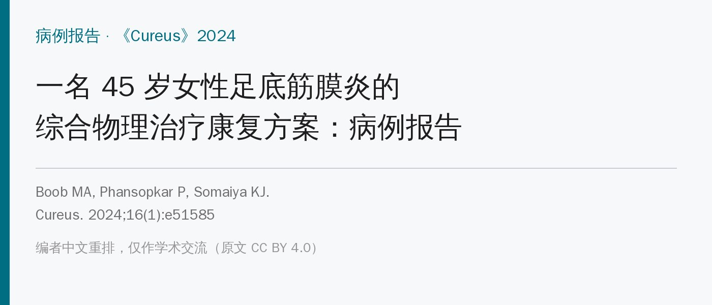
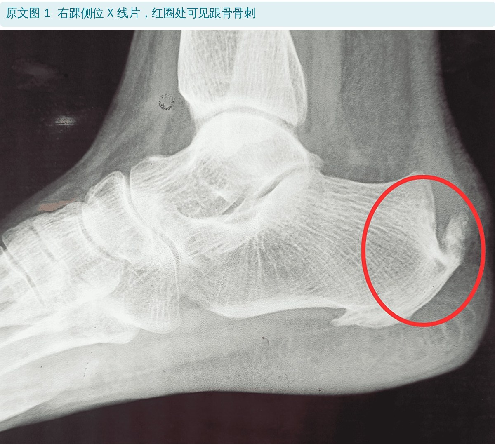
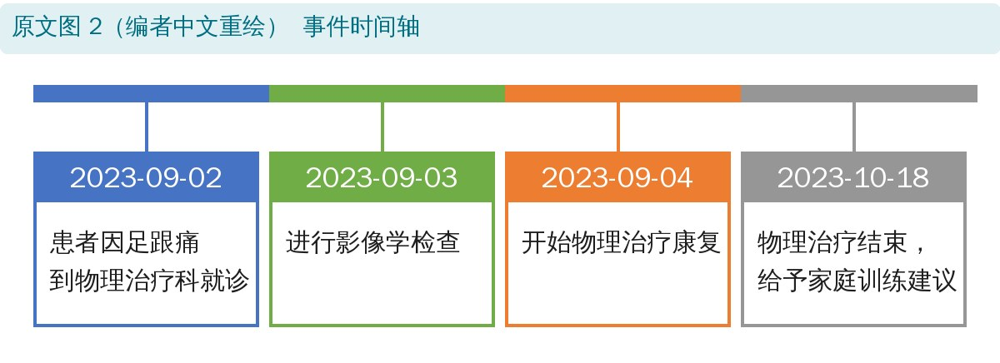
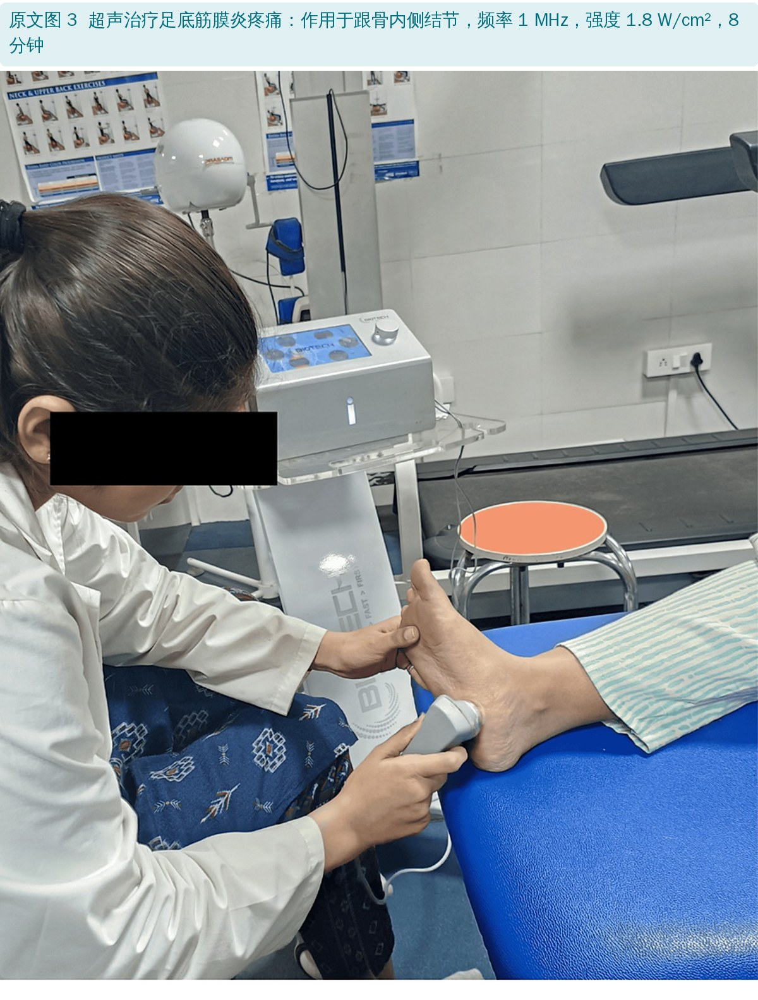
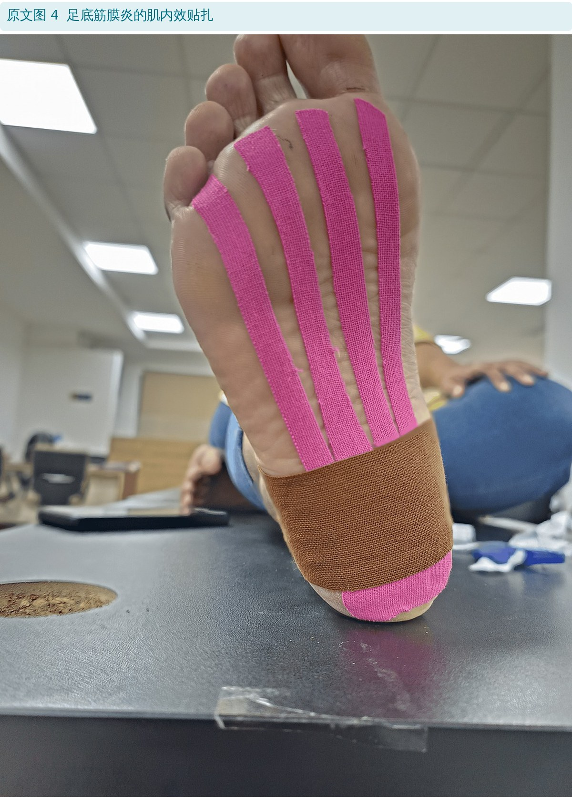
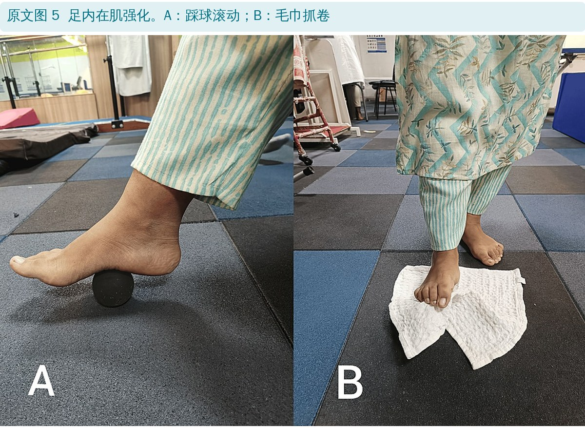
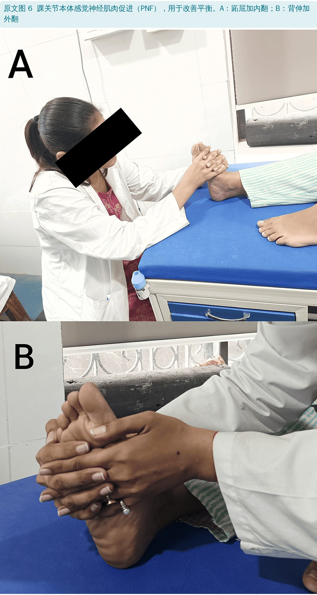
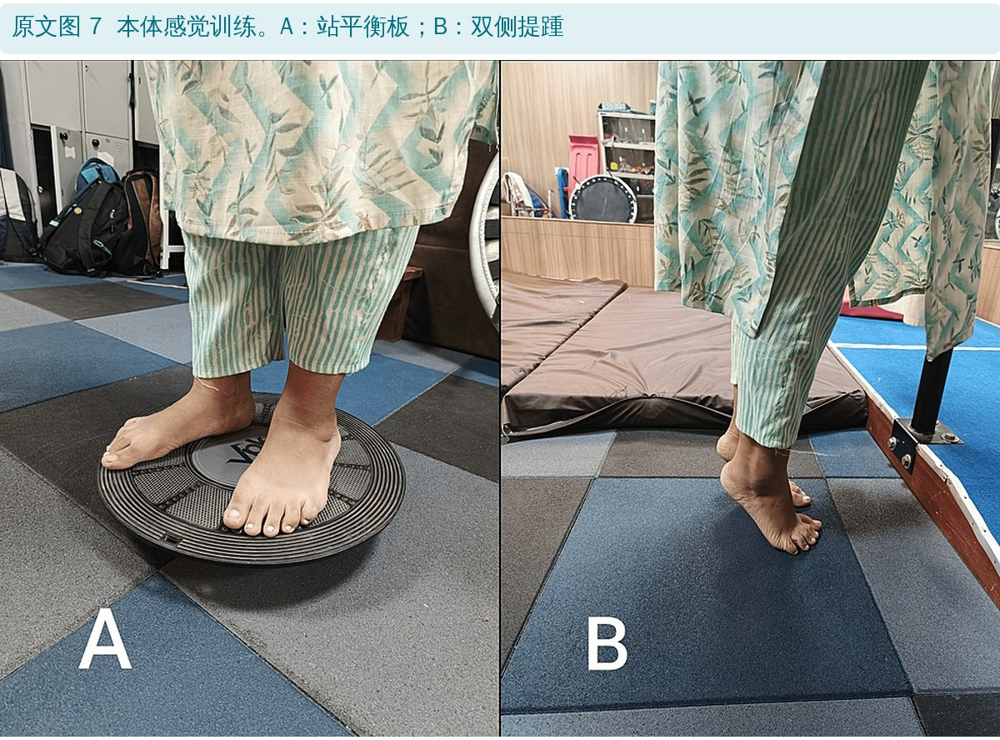
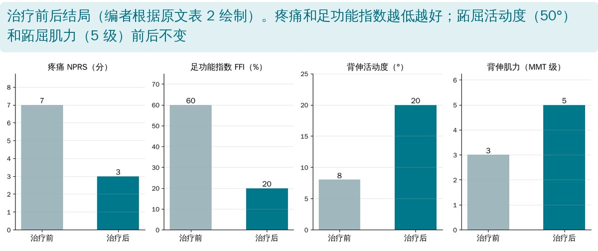

🔖原文信息（编者中文重排）
📚 文献信息
▪ Boob MA, Phansopkar P, Somaiya KJ. Comprehensive Physiotherapy Rehabilitation Protocol of Plantar Fasciitis for a 45-Year-Old Female: A Case Report. Cureus. 2024;16(1):e51585. doi:10.7759/cureus.51585
▪ 作者单位：印度 Datta Meghe 高等教育与研究学院 Ravi Nair 物理治疗学院，肌骨物理治疗
▪ 文章类型：单病例报告
足底筋膜炎被认为与筋膜止点处长期积累的张力有关：反复牵拉造成微小撕裂，引发慢性的修复反应；超声上可见筋膜增厚、纤维化、胶原断裂甚至坏死。典型表现是晨起头几步足跟痛，好发于 40～60 岁，超过 80% 的人保守治疗能缓解。治疗手段很多：夜间支具、口服或注射抗炎药、贴扎、手法、矫形鞋垫、小腿牵伸等。
这篇报告了一名长时间站立工作的护士，用一套多手段组合的物理治疗方案治疗足底筋膜炎，并记录了治疗前后疼痛、功能、活动度和肌力的变化。
• 患者：45 岁女性，神经外科 ICU 护士，体重指数 21.2，每天站立 7～8 小时，有 2 年糖尿病史
• 症状：右足跟跖内侧和后方疼痛约 6 个月，锐痛，早晨起床头几步最明显，走 30 分钟后减轻，休息时不痛；近 1 个月因疼痛和背伸无力，走路和保持平衡困难
• 检查：右足跟肿胀、2 级压痛，跟腱紧张，绞盘试验阳性；跟骨挤压试验（排除跟骨应力性骨折）阴性，跗管 Tinel 征阴性；右踝背伸活动度小于左侧，背伸肌力下降；双下肢等长
• 影像：X 线可见跟骨骨刺

🔖原文图 1：右踝侧位 X 线片

🔖原文图 2：事件时间轴（编者中文重绘）
另外，针对跟骨骨刺，患者还接受了2 次皮质激素注射和 1 次肉毒毒素注射，并做与足底筋膜炎相同的康复方案（原文没有写注射的具体时间）。
目标：减轻疼痛、改善活动度、促进长期恢复；重点是通过牵伸和强化减轻足底筋膜的张力，并改善本体感觉、平衡和稳定，降低复发风险。
• 讲清病情和治疗，强调依从性和生活方式调整，预防复发
• 休息：避免加重疼痛的活动，尽量减少患足负重
• 冰敷：疼痛部位每次 15～20 分钟，每天数次
• 超声：跟骨内侧结节，1 MHz、1.8 W/cm²、8 分钟
• 鞋垫和贴扎：定制或成品矫形鞋垫支撑足弓、改善力线；肌内效贴扎减轻足底筋膜的张力和疼痛

🔖原文图 3：超声治疗

🔖原文图 4：肌内效贴扎
• 小腿牵伸（弓步推墙）：面墙双手扶墙，一侧腿在后伸直膝，前腿屈膝，身体前倾，后脚跟不离地；保持 15～30 秒，每天 2～3 组
• 毛巾牵伸：毛巾套在前脚掌，轻拉保持 30 秒，两脚交替
• 足底筋膜牵伸：坐位跷二郎腿，把脚趾慢慢向胫骨方向扳，保持 30 秒后换脚
• 离心提踵：双脚提踵，再用一只脚慢慢下落，另一只脚保持抬起，然后双脚再推起；原文写“每天 10～15 组”
• 踝关节活动度练习，增加背伸

🔖原文图 5：足内在肌强化
• 足内在肌：坐或站，抬起足弓、张开脚趾；踩球滚动、毛巾抓卷；每次 2～3 组 × 10 次
• 弹力带：套在脚上做跖屈抗阻；反方向施阻做背伸抗阻；每组 10～15 次

🔖原文图 6：踝关节 PNF

🔖原文图 7：本体感觉训练
• 单腿站；踝关节 PNF：跖屈加内翻、背伸加外翻两个对角线模式
• 平衡板站立、双侧提踵；在草地、沙地等不平地面上行走或训练
• 字母操：脚趾在空中写字母，活动踝关节、强化周围肌肉
• 关节位置觉训练：如闭眼站立；随力量和稳定性提高逐步加大难度

🔖治疗前后结局（编者根据原文表 2 绘制）
| 指标 | 治疗前 | 治疗后 |
|---|---|---|
| 疼痛数字评分（NPRS） | 7 / 10 | 3 / 10 |
| 足功能指数（FFI） | 60% | 20% |
| 跖屈活动度 | 50° | 50° |
| 背伸活动度 | 8° | 20° |
| 跖屈肌徒手肌力（MMT） | 5 / 5 | 5 / 5 |
| 背伸肌徒手肌力（MMT） | 3 / 5 | 5 / 5 |
原文表 2：康复前后的结局指标（中文翻译）
NPRS 解读：0 无痛，1～3 轻度，4～5 中度，6～7 重度，8～9 很重，10 最痛。MMT 解读：0 无收缩；1 微弱收缩；2 去除重力下全范围活动；3 抗重力全范围活动；4 抗重力和轻微阻力下全范围活动；5 抗重力和轻微阻力下全范围活动（原文如此，见后文）。
原文称：评估在治疗第 1 天和 4 周后进行，患者症状缓解，能轻松完成日常工作。
• 单病例、无对照：足底筋膜炎有自然缓解的倾向，一个人的改善不能说明方案有效
• 干预太多，分不清谁起作用：超声、冰敷、休息、鞋垫、贴扎、牵伸、强化、平衡训练，再加上 2 次激素注射和 1 次肉毒毒素注射——疼痛下降很可能主要来自注射
• 剂量不清：每周治疗几次、每次多久、家庭训练做得怎样，原文都没有写
• 有值得追查的细节：糖尿病患者出现背伸肌力 3 级，这在单纯足底筋膜炎中并不典型，应排除周围神经病变等原因，原文没有讨论
• 优点：方案细节写得比较全，可以作为门诊足底筋膜炎综合处理的参考清单
• 治疗时长对不上：正文说“4 周后”评估，但时间轴显示康复从 2023 年 9 月 4 日到 10 月 18 日，约 6 周半
• 注射没有出现在时间轴里：2 次激素注射和 1 次肉毒毒素注射是很重要的干预，却没写时间，也没进时间轴
• 摘要和结论提到“手法治疗”：表 1 的方案里并没有任何手法治疗
• 疼痛量表名称不一致：方法部分说用视觉模拟评分（VAS），表 2 写的是数字评分（NPRS）
• 徒手肌力 4 级和 5 级的定义一样：都写成“抗重力和轻微阻力下全范围活动”，5 级应为能对抗最大阻力
• “炎症”与“退变”前后矛盾：引言引用超声所见的纤维化、胶原断裂、坏死等退变表现，讨论部分又把足底筋膜炎定义为“足底筋膜的炎症”
• 离心提踵剂量不合理：“每天 10～15 组”没有写每组次数，量也异常大，可能是把“次”写成了“组”
• “踩球滚动”算不上内在肌强化：踩球滚动是足底放松，原文把它归在“足内在肌强化”下
• 讨论说平衡和稳定性明显改善：但结局指标里没有测平衡
• 病史表述不清：“since the sixth month”应为“近 6 个月”
• 问清工作和站立时间：长时间站立的护士、店员等是高发人群，鞋和工作姿势都要调整
• 查体三件事：足跟内侧压痛、绞盘试验、背伸活动度和跟腱紧张度；同时排除跟骨应力性骨折、跗管综合征
• 牵伸放在核心：足底筋膜牵伸、小腿和跟腱牵伸，每次 30 秒
• 加上强化：足内在肌（抬足弓、张趾、毛巾抓卷）、离心提踵、弹力带跖屈 / 背伸
• 别忘了平衡和本体感觉：单腿站、平衡板、闭眼站
• 糖尿病患者：出现肌力下降或感觉异常，先排查神经病变
• 看疗效时留意合并治疗：激素和肉毒毒素注射本身就能显著止痛
| 目标 | 治疗措施 |
|---|---|
| 患者教育：病情和治疗 | 强调遵医嘱完成治疗的重要性；强调生活方式调整对预防复发的作用 |
| 缓解和预防足底筋膜炎疼痛，提高活动能力和整体健康 | 休息：让脚得到充分休息，避免加重疼痛的活动，尽量减少患足负重 冰敷：疼痛部位冰敷 15～20 分钟，建议每天数次 超声（图 3）：跟骨内侧结节，8 分钟，频率 1 MHz，强度 1.8 W/cm² 牵伸练习：针对性的牵伸有助于减轻足底筋膜张力，包括小腿牵伸、跟腱牵伸等 矫形鞋垫：定制或成品鞋垫可提供支撑、改善足部力线；并做肌内效贴扎（图 4）以减轻足底筋膜的张力和疼痛 |
| 改善背伸肌的活动度和柔韧性 | 小腿牵伸：面墙双手扶墙，一脚在后伸直膝，前膝屈曲，身体前倾靠墙，后脚跟不离地；保持 15～30 秒后放松，每天 2～3 组 毛巾牵伸：毛巾套在前脚掌，轻拉保持 30 秒，两脚各做 足底筋膜牵伸：坐在椅子上，一腿搭在另一膝上，把脚趾慢慢向胫骨方向扳，保持 30 秒后换脚 离心提踵：双脚提踵，然后一只脚慢慢放下、另一只脚保持抬起，再双脚推起；每天 10～15 组 踝关节活动度练习，增加背伸 |
| 增强跖屈肌和背伸肌力量 | 足内在肌强化：坐或站，抬起足弓、张开脚趾，做踩球滚动（图 5A）和毛巾抓卷（图 5B）；2～3 组 × 10 次 弹力带练习：弹力带套在脚上强化跖屈肌；反方向施加阻力强化背伸肌；10～15 次 |
| 改善平衡和稳定 | 平衡练习：单腿站立 踝关节 PNF：跖屈加内翻（图 6A），背伸加外翻（图 6B） 本体感觉训练：平衡板（图 7A）制造不稳定平面，迫使足踝肌肉更努力地维持平衡；双侧提踵（图 7B）改善平衡和稳定 不平地面：在草地、沙地等不平地面上行走或训练 字母操：脚趾在空中写字母 关节位置觉训练：如闭眼站立，更多依赖本体感觉 渐进加载：随力量和稳定性提高，逐步增加本体感觉训练的难度和强度 |
原文表 1：根据患者问题制订的治疗措施（中文翻译）
欢迎关注骨科康复小黄公众号，获取更多物理治疗的专业知识！
📄参考文献：
Boob MA, Phansopkar P, Somaiya KJ. Comprehensive Physiotherapy Rehabilitation Protocol of Plantar Fasciitis for a 45-Year-Old Female: A Case Report. Cureus. 2024;16(1):e51585. doi:10.7759/cureus.51585
原文以 CC BY 4.0 许可发表。本文为学术交流用的中文解读：原文图 1、3～7 原样引用并加中文图注，图 2 按原意中文重绘，表 1、表 2 为中文翻译，结局图为编者根据原文数据绘制。